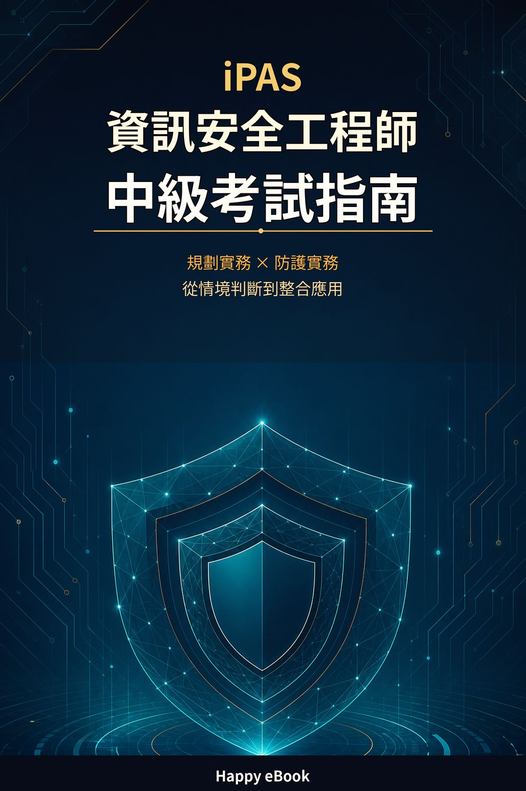

電子書
iPAS 資訊安全工程師中級考試指南
中級不是多背一批名詞，而是在角色、限制、成本、時序與營運需求同時出現時，選出最合適的控制組合

iPAS 資訊安全工程師中級考試指南
中級不是多背一批名詞，而是在角色、限制、成本、時序與營運需求同時出現時，選出最合適的控制組合
中級不是多背一批名詞，而是在角色、限制、成本、時序與營運需求同時出現時，選出最合適的控制組合。 本書整合「資訊安全規劃實務」與「資訊安全防護實務」，以晴岳數位服務為連續案例，帶你完成治理、風險、資料、IAM、網路、開發、雲端、韌性、弱點、SOC、事件應變與控制驗證。全書提供架構圖、決策表、跨域案例、原創情境題與四回診斷模擬；題本與答案解析分開編排，方便先閉卷作答，再集中訂正。 考試資訊請依iPAS官方網站最新簡章與公告為準